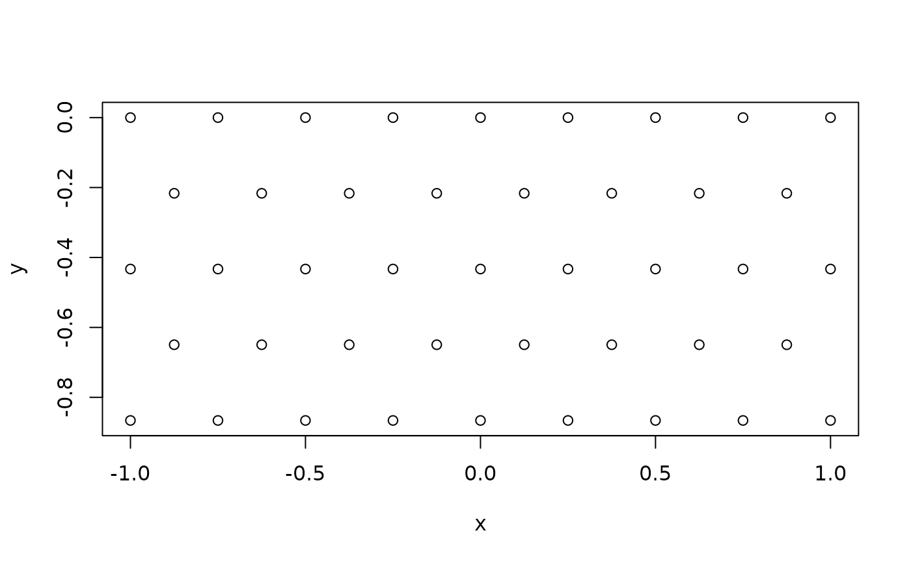

This function generates a hexagonal lattice of points within the given x and y limits, using a specified hexagon diameter. The diameter is 2 times the distance between adjacent x (and y) values, see examples.
Value
A data frame with two columns, x and y, containing the
coordinates of the hexagonal grid points.
Examples
xlim <- c(-1, 1)
ylim <- c(-1, 0)
grid <- grid_hex(xlim, ylim, .25)
head( grid )
#> x y
#> 1 -1.00 -0.8660254
#> 2 -0.75 -0.8660254
#> 3 -0.50 -0.8660254
#> 4 -0.25 -0.8660254
#> 5 0.00 -0.8660254
#> 6 0.25 -0.8660254
str( grid )
#> 'data.frame': 43 obs. of 2 variables:
#> $ x: num -1 -0.75 -0.5 -0.25 0 0.25 0.5 0.75 1 -0.875 ...
#> $ y: num -0.866 -0.866 -0.866 -0.866 -0.866 ...
plot( grid, asp = 1 )

grid$x |> unique() |> sort() |> diff()
#> [1] 0.125 0.125 0.125 0.125 0.125 0.125 0.125 0.125 0.125 0.125 0.125 0.125
#> [13] 0.125 0.125 0.125 0.125